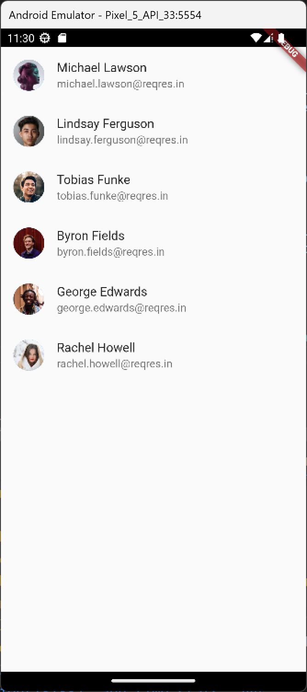

7 Akses Data melalu API
7.1 Konsep Dasar REST API
REST API adalah salah satu cara untuk mengakses data dari server. REST API menggunakan protokol HTTP untuk mengakses data. REST API menggunakan metode HTTP Request seperti GET, POST, PUT, DELETE.
Flutter menyediakan package http untuk menggunakan resource HTTP. http adalah library berbasis Future dan menggunakan fitur await dan async. http menyediakan banyak metode tingkat tinggi dan menyederhanakan pengembangan mobile application berbasis REST.
Beberapa method di package http yang sering digunakan
get: Digunakan untuk membuat permintaan HTTP GET ke URL yang ditentukan dan mengembalikan responsnya sebagaiFuture<Response>.Responseadalah objek yang berisi respons dari server setelah membuat permintaan HTTP. Anda dapat menggunakan objekResponseuntuk mengakses data respons body, status code, header, dan lainnya.Contoh penggunaan :
Future<void> fetctData() async { var response = await http.get(Uri.parse('url')); if (response.statusCode == 200) { print('Response data: ${response.body}'); } else { print('Request failed with status: ${response.statusCode}'); } }post: Digunakan untuk membuat permintaan HTTP POST ke URL yang ditentukan. Anda dapat mengirim data dalam bentuk body yang akan dikirim ke server. Dan juga akan mengembalikan respons sebagaiFuture<Response>. (Response yang sering di gunakan adalah status code, untuk mengetahui apakah berhasil atau gagal) Contoh penggunaan :Future<void> sendData() async { var response = await http.post( Uri.parse('url'), body: {'key1': 'value1', 'key2': 'value2'}, ); if (response.statusCode == 200) { print('Response data: ${response.body}'); } else { print('Request failed with status: ${response.statusCode}'); } }put: Digunakan untuk membuat permintaan HTTP PUT ke URL yang ditentukan. Ini digunakan untuk memperbarui data di server dengan data yang diberikan dalam body. Dan juga akan mengembalikan respons sebagaiFuture<Response>.Contoh penggunaan :
Future<void> updateData() async { var response = await http.put( Uri.parse('url'), body: {'key1': 'new-value1', 'key2': 'new-value2'}, ); if (response.statusCode == 200) { print('Response data: ${response.body}'); } else { print('Request failed with status: ${response.statusCode}'); } }patch: Digunakan untuk membuat permintaan HTTP PATCH ke URL yang ditentukan. Ini digunakan untuk memperbarui data di server dengan data yang diberikan dalam body. Dan juga akan mengembalikan respons sebagaiFuture<Response>.Tip- Bedanya
patchdenganputadalah kalauputmengubah data seluruhnya atau replace data, kalaupatchuntuk memperbarui atribut tertentu
Contoh penggunaan :
Future<void> partiallyUpdateData() async { var response = await http.patch( Uri.parse('url'), body: {'key1': 'new-value1'}, ); if (response.statusCode == 200) { print('Response data: ${response.body}'); } else { print('Request failed with status: ${response.statusCode}'); } }- Bedanya
delete: digunakan untuk membuat permintaan HTTP DELETE ke URL yang ditentukan. Ini digunakan untuk menghapus data dari server. Dan mengembalikan respons sebagaiFuture<Response>.Contoh penggunaan :
Future<void> deleteData() async { var response = await http.delete(Uri.parse('url')); if (response.statusCode == 200) { print('Resource deleted successfully'); } else { print('Request failed with status: ${response.statusCode}'); } }Pada intinya, REST API mirip dengan jembatan yang menghubungkan aplikasi Anda ke server. Ini memberikan cara standar bagi aplikasi untuk berkomunikasi dan bertukar informasi melalui web. Komunikasi ini sering terjadi melalui HTTP (HyperText Transfer Protocol), yang berfungsi sebagai sarana transfer data. REST API ditentukan oleh serangkaian batasan yang menentukan struktur dan perilakunya, menjadikannya alat serbaguna untuk mengambil, mengirim, memperbarui, dan menghapus data.
7.2 Menggunakan Package HTTP
Di Flutter untuk menggunakan fitur rest API perlu menggunakan package / dependency tambahan yaitu http. Dalam project flutter, di file pubspec.yaml, di scope dependencies ketik http: dan flutter akan otomatis merekomendasikan versi terakhir.
dependencies:
flutter:
sdk: flutter
http: ^1.1.0Untuk import, aliaskan sebagai http agar mempermudah pemanggilan
`import 'package:http/http.dart' as http;`7.3 Mengambil Data dari REST API
Untuk mengambil data (metode GET), kita harus import dulu dependency yang diperlukan
import 'package:http/http.dart' as http;
import 'dart:convert'- Disini library dart convert digunakan untuk mengubah atau decode data dari API yang berbentuk JSON ke dalam bentuk Map dan List.
Contoh API kita ambil data dari reqres.in, kita pilih yang GET List Users.
Berikut URL API dan data nya : https://reqres.in/api/users?page=2
{
"page": 2,
"per_page": 6,
"total": 12,
"total_pages": 2,
"data": [
{
"id": 7,
"email": "michael.lawson@reqres.in",
"first_name": "Michael",
"last_name": "Lawson",
"avatar": "https://reqres.in/img/faces/7-image.jpg"
},
{
"id": 8,
"email": "lindsay.ferguson@reqres.in",
"first_name": "Lindsay",
"last_name": "Ferguson",
"avatar": "https://reqres.in/img/faces/8-image.jpg"
},
{
"id": 9,
"email": "tobias.funke@reqres.in",
"first_name": "Tobias",
"last_name": "Funke",
"avatar": "https://reqres.in/img/faces/9-image.jpg"
},
{
"id": 10,
"email": "byron.fields@reqres.in",
"first_name": "Byron",
"last_name": "Fields",
"avatar": "https://reqres.in/img/faces/10-image.jpg"
},
{
"id": 11,
"email": "george.edwards@reqres.in",
"first_name": "George",
"last_name": "Edwards",
"avatar": "https://reqres.in/img/faces/11-image.jpg"
},
{
"id": 12,
"email": "rachel.howell@reqres.in",
"first_name": "Rachel",
"last_name": "Howell",
"avatar": "https://reqres.in/img/faces/12-image.jpg"
}
],
"support": {
"url": "https://reqres.in/#support-heading",
"text": "To keep ReqRes free, contributions towards server costs are appreciated!"
}
}Buatlah class model untuk menampung data api nanti sebagai list
class Person {
int id;
String email;
String firstName;
String lastName;
String avatar;
Person({
required this.id,
required this.email,
required this.firstName,
required this.lastName,
required this.avatar,
});
factory Person.fromMap(Map<String, dynamic> json) {
return Person(
id: json['id'] as int,
email: json['email'],
firstName: json['first_name'],
lastName: json['last_name'],
avatar: json['avatar'],
);
}
}
factoryadalah keyowrd dart untuk factory constructor, factory constructor digunakan untuk menerapkan constructor yang tidak selalu membuat instance baru dari class tapi dengan mengembalikkan instance dari cache.- Disini
factorydigunakan untuk mengubah data Map menjadi objek class Person.
- Disini
Buatlah fungsi untuk fetch data dari API dengan class Future dengan tipe data List object dari class yang telah dibuat, ambil data dengan fungsi http.get() isi parameter dengan String URL API, namun harus di parse terlebih dahulu ke class Uri. Masukkan respondnya ke dalam variable final.
Response http memiliki banyak informasi, yang paling sering digunakan adalah body, dan status code.
Response body masih berbentuk String, kita dapat men-decode dengan jsonDecode. Karena data dari API reqres.in masih berbentuk Map belum List, maka decode dari response body di masukkan ke variable Map<String, dynamic>.
Baru kita masukkan data API ke dalam list, disini ambil data dari key “data” saja.
Lalu baru kita return kan dengan me-mapping List<dynamic> tadi ke List dari objek class yang kita buat.
Future<List<Person>> fetchData() async {
final response =
await http.get(Uri.parse('https://reqres.in/api/users?page=2'));
if (response.statusCode == 200) {
Map<String, dynamic> data =
jsonDecode(response.body) as Map<String, dynamic>;
List<dynamic> dataPerson = data['data'] as List;
return dataPerson.map((e) => Person.fromMap(e)).toList();
} else {
throw Exception('Failed to load data');
}
}Di luar fungsi fetch data kita siapkan variable List juga dengan class Future untuk menampung data return dari fungsi fetchData.
late Future<List<Person>> listPerson;- Kenali data dari api yang anda ambil, disini data dari reqres.in data nya berbentuk map, data utamanya berada di key “data”.
Futuredanasyncawaitadalah sebuah fitur yang digunakan untuk mengeksekusi sebuah kode secara asynchronous.Response/http.Response: adalah objek yang berisi respons dari server setelah membuat permintaan HTTP. Anda dapat menggunakan objek Response untuk mengakses data respons, status kode, header, dan lainnya.- body : berisi data dari response
- status code : status code dari response
- 1xx (Informational): Kode status dalam kategori ini adalah respons awal yang mengindikasikan bahwa permintaan telah diterima, dan server sedang memprosesnya.
- 2xx (Successful): Kode status dalam kategori ini mengindikasikan bahwa permintaan telah berhasil diterima, dimengerti, dan diproses dengan baik.
- 200 OK: Permintaan berhasil dan respons mengandung data yang diminta.
- 201 Created: Sumber daya baru berhasil dibuat.
- 3xx (Redirection): Kode status dalam kategori ini mengindikasikan bahwa klien harus mengambil tindakan tambahan untuk menyelesaikan permintaan.
- 4xx (Client Error): Kode status dalam kategori ini mengindikasikan kesalahan yang disebabkan oleh klien dalam permintaan.
- 5xx (Server Error): Kode status dalam kategori ini mengindikasikan kesalahan yang terjadi di server saat memproses permintaan.
jsonDecode: digunakan untuk mengubah data dari API yang berbentuk JSON ke dalam bentuk Map dan List.
7.4 Menampilkan Data pada Widget
Karena mengambil data dari API memerlukan waktu / loading, maka state widgetnya nya harus dinamis, yang umum adalah menggunakan StatefulWidget. Jika sebelumnya menggunakan StatelessWidget, dapat diubah dengan mudah, yaitu dengan klik kanan -> refactor -> convert to StatefulWidget.
Setelah menjadi StatefulWidget, dapat membuat fungsi untuk initial state, kita isi dengan meng-assign variable future list penampung dengan fungsi fetch data.
void initState() {
super.initState();
listPerson = fetchData();
}Untuk memanggil atau menampilkan data di widget, kita perlu widget FutureBuilder. FutureBuilder memerlukan properti yang wajib diisi yaitu future dan builder
future diisi dengan variable future list penampung datanya
builder diisi dengan context dari BuildContext dan snapshot, snapshot adalah variable yang dialiaskan untuk data yang diambil dari future list penampung.
Lalu kita isi kondisi jika snapshot memiliki data, baru kita return dengan widget untuk tampilan.
Disini menggunakan ListView.builder, kita isi itemCount sesuai dengan jumlah data di snapshot, untuk item builder kita gunakan list tile.
FutureBuilder(
future: listPerson,
builder: (context, snapshot) {
if (snapshot.hasData) {
return ListView.builder(
itemCount: snapshot.data!.length,
itemBuilder: (context, index) {
return ListTile(
leading: CircleAvatar(
backgroundImage:
NetworkImage(snapshot.data![index].avatar),
),
title: Text(
'${snapshot.data![index].firstName} ${snapshot.data![index].lastName}'),
subtitle: Text(snapshot.data![index].email),
);
});
} else {
return const Center(
child: CircularProgressIndicator(),
);
}
},
)- ListView.builder
itemCount: diisi dengan jumlah data di snapshot dengan keywordlength,itemBuilder: diisi dengan widget yang akan di tampilkan, disini menggunakanListTileListTile: memiliki beberapa properti yang dapat diisi sesuai dengan kebutuhan, diantaranya:leading: untuk menampilkan gambar/icon di sebelah kirititle: untuk menampilkan judulsubtitle: untuk deskripsi
